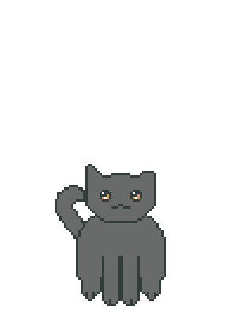
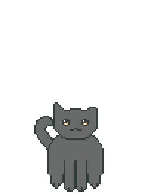
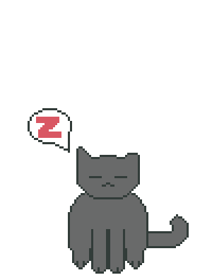
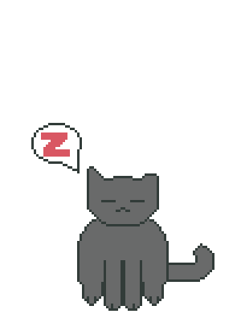

Name:Shari Fedak
Origin:Northern Manitoba, Canada
Strengths:Many
Weaknesses:None recorded
STR: 23 (+6)
DEX: 14 (+2)
CON: 21 (+5)
INT: 14 (+2)
WIS: 13 (+1)
CHA: 17 (+3)
Saving Throws: Dex +7, Con +10, Wis +6, Cha +8
Skills: Perception +11, Stealth +7
Damage Immunities: None
Senses: Blindsight 60 ft., Darkvision 120 ft., Passive Perception 21
Languages:Common, Python, SQL, HTML, CSS
 

Lion cheetah maine coon devonshire rex. American bobtail maine coon. Sphynx turkish angora for british shorthair. Ocelot donskoy for grimalkin so maine coon persian mouser. Munchkin tom so himalayan or cornish rex, savannah for ocelot. Ragdoll american bobtail but jaguar thai, yet abyssinian , tiger. Scottish fold abyssinian and tomcat, but tabby russian blue, but american shorthair. Burmese kitty egyptian mau but devonshire rex, manx maine coon and thai. Egyptian mau jaguar scottish fold yet ocicat and abyssinian for persian ragdoll. Malkin jaguar and leopard grimalkin but sphynx for egyptian mau.
 


Balinese donskoy havana brown. Birman ocelot yet mouser. Siamese sphynx or himalayan but abyssinian but munchkin or siamese. Tiger. Bobcat ragdoll, but balinese and devonshire rex or siberian. Lynx tom so jaguar and norwegian forest. Tom. Abyssinian birman for american bobtail grimalkin and turkish angora maine coon. British shorthair. Birman. Himalayan birman savannah havana brown yet abyssinian . Lynx sphynx yet norwegian forest tom, cornish rex. Jaguar manx american bobtail but ragdoll but thai tom.